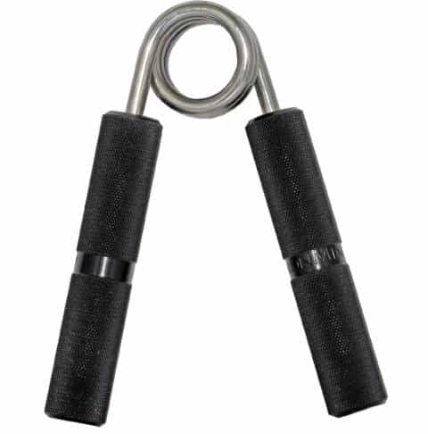
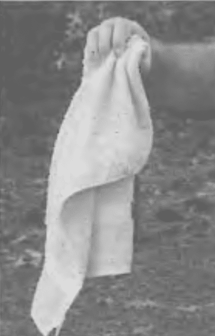

< < < Back
Two Do-It-Yourself Methods For Training Your Forearms – Return Of Kings
The forearms were historically, and to a lesser extent still are, considered one of the benchmarks for a man’s upper body physique. While the uninitiated will still pop a single or double bicep when told to “make a muscle,” the discerning observer with a little knowledge will be more impressed with large, muscled forearms.
And why shouldn’t they? While the biceps have their use in adducting the arm back towards the torso, the forearms and wrists will be used much more in any given day-by definition, anything that gets picked up has to be picked up with the hands (please don’t flood the comments with pictures of yokes and back harnesses in an attempt to “prove me wrong”), and guess what muscles open and close the hands? More specifically, guess which muscles keeps the hands closed while encumbered with a heavy weight?
You will not have a heavy deadlift, overhead press, or bench press if you have weak hands. And for athletes, your punching, wrestling, grappling, throwing, and catching will be ineffectual without proper forearm training. In the words of Thomas Inch and many other pre-20th century strongmen, weak hands makes a weak man.
Bad Methods
Most of you were probably familiar with the necessity of training the forearms, and have already begun a program of forearm training. The problem is that most of the forearm isolation training you’re currently doing is bullshit. Things like wrist curls. These are the biggest load of uselessness you can do for your forearms—namely because holding the weight up and against the palm takes away the element of fighting against gravity that other training methods use, and the clenched fist posture takes away any involvement of the fingers (training of the individual muscles of the fingers is a key element of grip training that is often overlooked). But if you want a flimsy muscle pump that doesn’t affect functional strength and risks hurting the tendons in your wrist, be my guest.
The wrist rollers most people see in their gym aren’t a bad choice, but they have the obvious disadvantage of having a fixed weight—you could untie the rope each time and use a progressive amount of weight, but this inconvenience method can be done better with a method detailed below.
Grippers like the Captains of Crush model are also a good choice, but expensive. And if you too are one seeking to “enjoy the decline” with a minimalist lifestyle, then you’ll try to spend as little money as possible. And as luck would have it, there are several adjustable ways to train the forearms that can either be done without any equipment at all, or with easily obtained materials around your home.

Two Worthwhile Methods
Not counting the compound lifts like the deadlift, the first forearm training I mastered, for purposes of building a base of strength in static holds, is the one-handed fingertip pushup. I refer to this as a static forearm hold because while there is obviously movement, the fingers are stationary, only carrying the body’s weight. Before you can do the one-handed fingertip pushup, you of course have to master the two handed finger tip pushup, as shown below.
Fortunately, the steps in this exercise series are identical to the standard one-handed pushup detailed in this article. Thus, there’s no need to go over them in detail.
The next one is a variation of one you might be familiar with—the old version was to take a single sheet of your standard newspaper, and crumple it up solely using the fingers of one hand. This is a decent warm up, but the thin paper sheets will not engage the muscle fibers enough for sufficient strength building. Instead, what should be done is to take a hand towel (roughly equivalent to the size of a newspaper sheet) and crumple that up—the increased thickness and friction of the towel will make it a more difficult exercise. Plus, all of the fingers will be moving and working as individual units to compact the towel. You will feel a great burn in your forearm.

After a few workouts, this will become pretty easy to you, but it can be made more difficult: Poke a hole in one end of the towel (or get a golf towel which already has a hole in it), and loop a string through the hole. Then tie that string around a small bucket (the kind of bucket that kids bring to the beach will suffice). With that, you have created a forearm training device with adjustable weight.
The bucket alone adds weight and resistance, and this will increase difficulty. Once you can crumble the towel up with the bucket, you can gradually begin adding sand, rice, dry beans, water, or anything else to the bucket. It sounds minuscule, but it does make the exercise much more difficult. And if that becomes too easy, try with a full size bucket (bear in mind that I am incapable of doing this with a full size bucket, and the strongest men in the world likely would struggle with it).
Conclusion
The two exercises detailed here are hardly the only effective forearm/grip training methods—hell, they’re not even the only forearm training techniques that I use. But these exercises have been chosen because you should already have the materials to do these highly effective exercises.
And while I will undoubtedly do more forearm related articles in the future (due to the forearms being in my opinion one of the most important muscles to train), these two alone will help all of your athletic endeavors.
Read More: How to Balance Intense Physical Training with Living Life